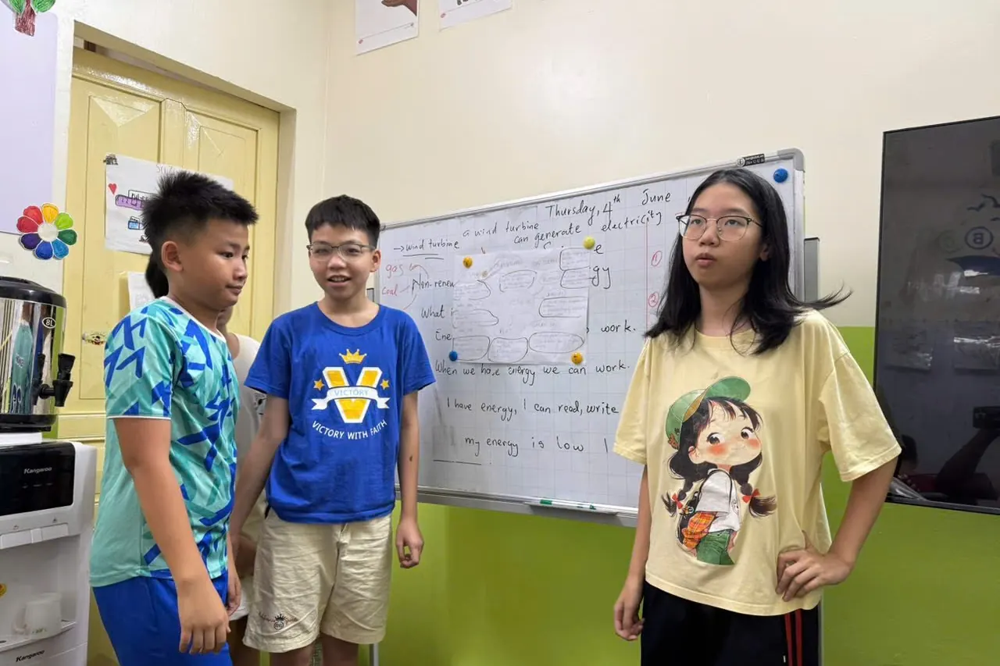

Trung tâm tiếng Anh cho trẻ em ở Đống Đa: So sánh 5 lựa chọn từ mầm non đến lớp 12 (2026)
Sĩ số, giáo viên, giáo trình, học phí một tháng — và những câu hỏi giúp bạn tự kiểm chứng trước khi đóng tiền cho con.

- Giai đoạn 2025–2030, tiếng Anh trở thành môn bắt buộc từ lớp 1 trên cả nước theo Quyết định 2371/QĐ-TTg. Học sớm không còn là “học thêm cho có”.
- Ở Hà Nội, Ngoại ngữ là môn thi thứ ba vào lớp 10 công lập năm học 2026–2027 (trắc nghiệm, 60 phút).
- Năm câu hỏi nên hỏi mọi trung tâm: sĩ số tối đa là bao nhiêu, ai trực tiếp đứng lớp, giáo trình và lộ trình ra sao, học phí tính thế nào, con được đánh giá tiến bộ bằng gì.
- Quanh Đống Đa có các thương hiệu quốc tế (Hội đồng Anh, ILA, Apollo), một hệ thống thiếu nhi lâu năm (PoPoDoo) và trung tâm lớp nhỏ như HEC.
- HEC: tối đa 12 học sinh/lớp, 2 buổi/tuần × 90 phút, 210.000₫/buổi (khoảng 1,68–1,89 triệu đồng/tháng), thu theo số buổi thực học.
Nội dung bài viết
- Vì sao năm học 2026–2027 là thời điểm cần quyết định?
- 5 tiêu chí chọn trung tâm tiếng Anh cho trẻ em
- So sánh 5 trung tâm tiếng Anh cho trẻ em quanh Đống Đa
- Lộ trình học tiếng Anh theo độ tuổi: mầm non đến lớp 12
- Học phí tiếng Anh cho trẻ: một tháng bao nhiêu tiền?
- Bằng chứng thay vì lời hứa: lớp học thật tại HEC
- Câu hỏi thường gặp
Vì sao năm học 2026–2027 là thời điểm phụ huynh cần quyết định?
Mỗi năm, câu hỏi “cho con học tiếng Anh ở đâu?” lại xuất hiện trong các nhóm phụ huynh ở Hà Nội. Nhưng năm nay có ba thay đổi chính sách khiến câu trả lời quan trọng hơn hẳn.
1. Tiếng Anh trở thành “ngôn ngữ thứ hai” trong trường học
Ngày 27/10/2025, Thủ tướng Chính phủ ban hành Quyết định 2371/QĐ-TTg phê duyệt Đề án “Đưa tiếng Anh thành ngôn ngữ thứ hai trong trường học giai đoạn 2025–2035, tầm nhìn đến năm 2045”. Trong giai đoạn 2025–2030:
- 100% cơ sở giáo dục phổ thông trên cả nước dạy tiếng Anh bắt buộc từ lớp 1;
- 100% cơ sở giáo dục mầm non tại các thành phố, đô thị vùng thuận lợi bảo đảm điều kiện để trẻ được làm quen với tiếng Anh.
Với phụ huynh, điều này có nghĩa là khoảng cách giữa trẻ “đã có nền” và “chưa có nền” khi vào lớp 1 sẽ lộ rõ sớm hơn. Mục tiêu hợp lý không phải là chạy đua, mà là để con bước vào lớp 1 với sự tự tin và thói quen nghe – nói tiếng Anh tự nhiên.
2. Ngoại ngữ là môn thi thứ ba vào lớp 10 tại Hà Nội
Với kỳ thi tuyển sinh vào lớp 10 THPT công lập không chuyên năm học 2026–2027, Hà Nội chọn Ngoại ngữ là môn thi thứ ba cùng Toán và Ngữ văn. Bài thi Ngoại ngữ là trắc nghiệm 60 phút, nội dung chủ yếu thuộc chương trình lớp 9. Môn thi thứ ba được Sở GD&ĐT Hà Nội công bố theo từng năm, vì vậy phụ huynh có con đang học lớp 8–9 nên theo dõi thông báo cho năm học 2027–2028.
3. Chứng chỉ quốc tế ở bậc THPT đang thay đổi giá trị
Trong kỳ thi tốt nghiệp THPT 2026, thí sinh có IELTS từ 4.0 trở lên được miễn thi môn Ngoại ngữ. Ở tuyển sinh đại học, quy chế 2026 giới hạn điểm cộng cho chứng chỉ ngoại ngữ ở mức tối đa 1,5 điểm, và dự thảo sửa đổi cho năm 2027 đề xuất bỏ loại điểm cộng này. Phân tích chi tiết có trong bài Học IELTS ở Đống Đa: so sánh trung tâm, học phí và lộ trình.
Tiếng Anh đang chuyển từ “điểm cộng” thành năng lực nền. Đầu tư đúng là giúp con dùng được tiếng Anh: đọc hiểu, viết mạch lạc, nói tự tin. Khi đã có năng lực thật, các kỳ thi chỉ là hệ quả.
5 tiêu chí chọn trung tâm tiếng Anh cho trẻ em (checklist cho phụ huynh)
Năm câu hỏi dưới đây chúng tôi khuyên mọi phụ huynh hỏi trực tiếp khi đi tìm hiểu — kể cả khi hỏi HEC.
1. Sĩ số tối đa là bao nhiêu — một con số cụ thể?
“Sĩ số nhỏ” là cụm từ trung tâm nào cũng dùng. Hãy hỏi con số. Phép tính đơn giản: nếu giáo viên chia đều một buổi 90 phút, lớp 12 em có khoảng 7,5 phút cho mỗi em, còn lớp 20 em chỉ còn khoảng 4,5 phút. Với trẻ nhỏ, đó là khác biệt giữa được sửa phát âm mỗi buổi và gần như không được sửa.
2. Ai trực tiếp đứng lớp, và có bằng sư phạm không?
Quốc tịch hay giọng bản ngữ không đồng nghĩa với năng lực sư phạm. Hãy hỏi: giáo viên có bằng sư phạm hoặc chứng chỉ giảng dạy gì, có dạy cố định lớp của con suốt khóa không, và lớp có trợ giảng hay không.
3. Giáo trình và lộ trình có mục tiêu đo được không?
Giáo trình quốc tế (National Geographic, Oxford, Cambridge…) là điểm khởi đầu tốt. Quan trọng hơn là mục tiêu cụ thể cho từng cấp độ, ví dụ: “đọc 70–90 từ/phút với độ chính xác từ 95%” thay vì “con tiến bộ rõ rệt”.
4. Học phí tính theo buổi hay đóng trọn khóa? Có phí ẩn không?
Hãy quy đổi về giá mỗi giờ học, rồi hỏi tiếp: phải đóng trước cả khóa hay theo tháng, bảo lưu và hoàn phí thế nào, có thu thêm phí giáo trình hay phí thi không.
5. Làm sao biết con thật sự tiến bộ?
Hỏi về bài kiểm tra đầu vào – đầu ra, báo cáo định kỳ, và sản phẩm của con (bài viết, bài thuyết trình, video). Một trung tâm tự tin vào chất lượng sẽ sẵn sàng cho phụ huynh dự giờ.
Ngồi quan sát 10 phút bất kỳ và đếm: con được nói bao nhiêu lần? Con có được gọi tên, được sửa lỗi, được hỏi “vì sao” không? Con số đó nói nhiều hơn mọi tờ rơi.
So sánh 5 trung tâm tiếng Anh cho trẻ em quanh Đống Đa
Chúng tôi chọn các trung tâm có cơ sở ở Đống Đa hoặc gần trục đường Láng – nơi nhiều gia đình ở Đống Đa, Cầu Giấy và Thanh Xuân thường tìm đến. Bảng dưới đây chỉ dùng thông tin mỗi đơn vị tự công bố.
| Trung tâm | Cơ sở gần Đống Đa | Độ tuổi | Giáo viên & phương pháp (theo website) | Sĩ số công bố | Học phí công bố |
|---|---|---|---|---|---|
| Happy English Club (HEC) | Số 25, ngõ 242 Láng | 4 tuổi – lớp 12 | Giáo viên tốt nghiệp tại Mỹ, có bằng sư phạm; học qua dự án; giáo trình National Geographic, Oxford, Cambridge | Tối đa 12 | 210.000₫/buổi 90 phút; IELTS 260.000₫/buổi 120 phút |
| Hội đồng Anh (British Council) – Lancaster | Tòa Lancaster Luminaire, 1152 đường Láng | 3–17 tuổi | Lớp mầm non, tiểu học, THCS; tiếng Anh học thuật và luyện thi IELTS cho 15–17 tuổi | Không nêu trên trang cơ sở | Tư vấn trực tiếp |
| ILA – Tây Sơn | 324 Tây Sơn | 2,5–16 tuổi | 100% giáo viên nước ngoài, có trợ giảng người Việt mỗi buổi; giáo trình chuẩn Cambridge | “Sĩ số nhỏ” (không nêu con số) | Theo trung tâm; chia nhỏ theo đợt |
| Apollo English – Láng Hạ | 3C Láng Hạ | Trẻ em và thiếu niên | Hoạt động tại Việt Nam từ năm 1994; giáo viên được giám sát chuyên môn bởi International House | Không nêu trên trang chủ | Tư vấn trực tiếp |
| PoPoDoo – Đống Đa | 29 Trần Hữu Tước | 3–15 tuổi | Hệ thống từ năm 2007; kết hợp tiếng Anh, sáng tạo, giá trị sống và trải nghiệm thực tế | Không nêu trên trang chủ | Tư vấn trực tiếp |
← Vuốt ngang để xem đủ bảng →
Nguồn: website và trang chính thức của từng trung tâm, truy cập ngày 26/10/2026 (xem mục Nguồn tham khảo cuối bài). “Không nêu” nghĩa là chúng tôi không tìm thấy con số trên trang được dẫn — không có nghĩa là trung tâm đó không có quy định.
Happy English Club (HEC)
Số 25, ngõ 242 Láng, phường Đống Đa, Hà Nội · Zalo 0975 679 889
Lớp tối đa 12 học sinh, mỗi buổi 90 phút, 2 buổi/tuần. Giáo viên tốt nghiệp tại Mỹ, có bằng sư phạm và chứng chỉ giảng dạy do bang New Jersey (Hoa Kỳ) cấp. Mỗi buổi học bắt đầu bằng một “câu hỏi lớn”, học sinh làm dự án và thuyết trình thay vì chỉ làm bài tập. Học phí niêm yết theo buổi, thu theo số buổi thực học; có CLB đọc sách miễn phí chiều thứ Bảy.
Phù hợp nếu: bạn muốn giáo viên biết rõ từng đứa trẻ, học phí minh bạch theo buổi, và con học qua dự án – thuyết trình.
Hội đồng Anh (British Council) – cơ sở Lancaster
Tòa Lancaster Luminaire, 1152 đường Láng, Đống Đa
Theo trang giới thiệu cơ sở, Hội đồng Anh dạy tiếng Anh cho trẻ mầm non và tiền tiểu học (3–6 tuổi), tiểu học (6–10 tuổi), THCS (11–14 tuổi), cùng tiếng Anh học thuật và luyện thi IELTS cho học viên 15–17 tuổi; có kiểm tra trình độ miễn phí.
Phù hợp nếu: bạn ưu tiên thương hiệu quốc tế lâu năm và một lộ trình liền mạch đến IELTS trong cùng một hệ thống.
ILA – Tây Sơn
324 Tây Sơn, Đống Đa
ILA chia ba lộ trình: mầm non (2,5–6 tuổi), tiểu học (6–11 tuổi) và trung học (11–16 tuổi), theo giáo trình chuẩn Cambridge (Starters, Movers, Flyers). Website nêu 100% giáo viên nước ngoài có chứng chỉ giảng dạy quốc tế, có trợ giảng người Việt mỗi buổi, cho học thử một tháng và chia nhỏ học phí theo đợt.
Phù hợp nếu: bạn muốn mô hình giáo viên nước ngoài kèm trợ giảng Việt và lộ trình chứng chỉ Cambridge.
Apollo English – Láng Hạ
3C Láng Hạ, Đống Đa
Apollo giới thiệu mình là hệ thống Anh ngữ 100% vốn nước ngoài đầu tiên tại Việt Nam (từ năm 1994), giáo viên chuẩn quốc tế được giám sát bởi International House, với mạng lưới nhiều cơ sở.
Phù hợp nếu: bạn cần một hệ thống lớn, dễ chuyển cơ sở khi gia đình thay đổi nơi ở.
PoPoDoo – Đống Đa
29 Trần Hữu Tước, Đống Đa
PoPoDoo dạy trẻ 3–15 tuổi qua các chương trình theo độ tuổi (như Kinder Jump cho 3–6 tuổi, Smart Leaders cho 6–11 tuổi), kết hợp tiếng Anh với sáng tạo, giá trị sống và trải nghiệm thực tế; hệ thống hoạt động từ năm 2007.
Phù hợp nếu: bạn tìm một trung tâm thiếu nhi lâu năm ngay trong khu vực Đống Đa.
Vậy nên chọn trung tâm nào?
| Nếu bạn ưu tiên… | Nên cân nhắc |
|---|---|
| Thương hiệu quốc tế, hệ thống lớn | Hội đồng Anh, ILA, Apollo |
| Giáo viên nước ngoài kèm trợ giảng Việt | ILA |
| Lớp nhỏ có con số cụ thể (≤12), học phí niêm yết theo buổi | HEC |
| Học qua dự án, thuyết trình, STEAM bằng tiếng Anh | HEC |
| Trung tâm thiếu nhi lâu năm trong khu vực | PoPoDoo |
Dù chọn nơi nào, hãy mang theo checklist ở trên, hỏi con số cụ thể và cho con học thử. Đứa trẻ sẽ cho bạn câu trả lời rõ nhất sau buổi học đầu tiên.
Lộ trình học tiếng Anh cho trẻ theo độ tuổi: mầm non đến lớp 12
Mỗi đứa trẻ có xuất phát điểm khác nhau, vì vậy độ tuổi chỉ là tham khảo. Ở HEC, con được xếp lớp theo trình độ bằng bài kiểm tra đầu vào miễn phí.
Mầm non (4–6 tuổi): nghe, bắt chước, yêu thích
Ở tuổi này, mục tiêu là âm thanh và sự hứng thú: nghe bài hát, truyện tranh, trò chơi; làm quen với chữ cái và âm; nói câu ngắn về bản thân. Đừng đo bằng ngữ pháp. Hãy đo bằng việc con có muốn nói tiếng Anh hay không.
Xem các bạn nhỏ của HEC trong trại hè 2026 — Elsa, Rainbow và Elina:
Lớp 1–2 (6–8 tuổi): đánh vần ghép âm và đọc to
Đây là giai đoạn của phonics (đánh vần ghép âm), từ vựng tần suất cao và đọc to câu ngắn. Khi tiếng Anh trở thành môn bắt buộc từ lớp 1, trẻ đã quen với âm – chữ sẽ tự tin hơn hẳn trên lớp.
Lớp 3–5 (8–11 tuổi): đọc trôi chảy, viết đoạn văn, thuyết trình
Trẻ chuyển từ “học để đọc” sang “đọc để học”: đọc văn bản thông tin, viết đoạn văn có câu chủ đề, thuyết trình ngắn trước lớp. Đây cũng là tuổi rất hợp để học tranh biện và làm dự án.

Lớp 6–9 (11–15 tuổi): ngữ pháp học thuật và kỳ thi vào lớp 10
Trọng tâm chuyển sang kiểm soát thì và cấu trúc câu, viết bài nhiều đoạn có luận điểm, đọc hiểu văn bản dài. Với học sinh Hà Nội, lớp 9 còn là năm ôn thi vào lớp 10 — năm học 2026–2027, Ngoại ngữ là một trong ba môn thi.

Lớp 10–12 (15–18 tuổi): tiếng Anh học thuật và IELTS
Đây là giai đoạn phù hợp để luyện IELTS một cách bài bản: kỹ năng viết luận, nói dài, đọc học thuật và chiến lược làm bài có giới hạn thời gian. Xem lộ trình và học phí chi tiết trong bài Học IELTS ở Đống Đa.
Các cấp độ tại HEC và mục tiêu đo được
Mỗi cấp độ ở HEC có tiêu chí hoàn thành cụ thể, được công bố trên trang chương trình học:
- Mars · National Geographic Look Starter
Đánh vần từ ba âm (CVC) chính xác từ 90%; đọc to 30–40 từ/phút; nói 6–8 câu về bản thân và gia đình; viết 4 câu đúng chữ hoa và khoảng cách. - Venus · National Geographic Look 1
Đọc 70–90 từ/phút với độ chính xác từ 95%; viết đoạn văn 4–6 câu đúng dấu câu; nói 1–2 phút theo tranh gợi ý. - Neptune · National Geographic Look 2
Dùng thì quá khứ với không quá 3 lỗi/100 từ; trả lời câu hỏi who/what/why có dẫn chứng; viết đoạn văn mạch lạc có câu mở và câu kết. - Jupiter · Oxford Discover 1
Đọc 120–150 từ/phút với độ chính xác từ 90%; viết đoạn 8–10 câu; thuyết trình poster 2 phút có bố cục rõ ràng. - SKY 1 · Oxford Discover 3
Tóm tắt bài đọc khoảng 300 từ thành 5–6 ý; thuyết trình 3 phút; viết báo cáo có mở bài – thân bài – kết luận. - Sanrio Grade 6 · Grammar & Writing G6
Đạt từ 85% độ chính xác ngữ pháp khi sửa bài; viết 2–3 đoạn (180–220 từ) có luận điểm và dẫn chứng; bài nói 2 phút dựa trên dẫn chứng. - Sun · IELTS
Mục tiêu band 5.5–7.0; viết Task 2 từ 250 từ trong 40 phút; duy trì phần phỏng vấn nói 3–4 phút mạch lạc.
Ngoài ra, lớp Mercury dạy Toán Cambridge bằng tiếng Anh cho học sinh muốn học tư duy toán và thuật ngữ toán học cùng lúc.
Học phí tiếng Anh cho trẻ: một tháng bao nhiêu tiền?
Đây là câu hỏi phụ huynh tìm kiếm nhiều nhất, và cũng là thông tin nhiều trung tâm không công bố. HEC niêm yết công khai: 210.000₫ cho mỗi buổi 90 phút. Lớp tiêu chuẩn học 2 buổi/tuần (3 giờ/tuần), tức khoảng 8–9 buổi mỗi tháng.
| Số buổi trong tháng | Học phí lớp tiêu chuẩn |
|---|---|
| 8 buổi (tháng có ngày nghỉ lễ) | 1.680.000₫ |
| 9 buổi | 1.890.000₫ |
| Quy đổi theo giờ | 140.000₫/giờ học |
- Thu theo số buổi thực học trong tháng — không đóng trước cả khóa, không phí ẩn.
- Giảm 5% cho anh/chị/em ruột cùng học.
- Hiện chưa thu phí giáo trình.
- Kiểm tra xếp lớp và buổi học thử: miễn phí.
- CLB đọc sách thứ Bảy (14:00–16:00): miễn phí, mọi lứa tuổi.
- Quy đổi về giá mỗi giờ học (tổng học phí ÷ tổng số giờ).
- Cộng thêm phí giáo trình, phí thi, phí tài liệu nếu có.
- Hỏi rõ: đóng trước bao lâu, bảo lưu – hoàn phí ra sao.
- Cuối cùng, đặt chi phí cạnh sĩ số: cùng một giá, lớp 12 em và lớp 20 em là hai trải nghiệm khác nhau.
Bằng chứng thay vì lời hứa: lớp học thật tại HEC
Chúng tôi tin phụ huynh nên được nhìn thấy con mình học như thế nào, thay vì chỉ đọc khẩu hiệu. Dưới đây là video quay tại lớp — không kịch bản, không dàn dựng.
Học sinh lớp 4 tranh biện bằng tiếng Anh
Một buổi học bình thường: các con nêu quan điểm, lắng nghe phía bên kia và phản biện lại — hoàn toàn bằng tiếng Anh. Đây là ý nghĩa thật của câu “học sinh nói nhiều hơn giáo viên”.
Các con tự kể về mùa hè 2026
Trại hè 2026 của HEC có 21 học viên. Cuối trại, mỗi gia đình nhận một trang nhật ký riêng cho con: video nổi bật, bộ ảnh chọn lọc, video con tự kể về hành trình và nhận xét song ngữ do giáo viên viết riêng. Xem thêm tại trang Trại hè HEC 2026.


Cho con học thử một buổi — miễn phí
Bài kiểm tra xếp lớp ngắn, một buổi học thật, và bạn tự quan sát con được nói bao nhiêu lần. Không cam kết, không áp lực.
Nhắn Zalo 0975 679 889 Gọi ngayCâu hỏi thường gặp
Trẻ mấy tuổi nên bắt đầu học tiếng Anh ở trung tâm?
Không có một “tuổi vàng” duy nhất. Với trẻ 4–5 tuổi, mục tiêu là nghe, bắt chước và yêu thích tiếng Anh chứ chưa phải ngữ pháp. HEC nhận học sinh từ 4 tuổi đến lớp 12 và xếp lớp theo trình độ bằng bài kiểm tra đầu vào miễn phí.
Học tiếng Anh ở trung tâm mấy buổi một tuần là đủ?
Sự đều đặn quan trọng hơn số buổi. Các lớp tiêu chuẩn tại HEC học 2 buổi mỗi tuần, mỗi buổi 90 phút (3 giờ/tuần), kết hợp đọc sách ở nhà và CLB đọc sách miễn phí chiều thứ Bảy.
Học phí trung tâm tiếng Anh cho trẻ em ở Hà Nội khoảng bao nhiêu một tháng?
Mỗi trung tâm tính học phí khác nhau và nhiều nơi không công bố bảng giá. Tại HEC, học phí là 210.000₫ cho mỗi buổi 90 phút; với 2 buổi/tuần (8–9 buổi/tháng), chi phí khoảng 1.680.000–1.890.000₫/tháng, thu theo số buổi thực học.
Nên chọn giáo viên nước ngoài hay giáo viên Việt Nam cho con?
Quốc tịch không quyết định chất lượng dạy. Hãy hỏi giáo viên có bằng sư phạm hay chứng chỉ giảng dạy không, có dạy cố định lớp của con không và lớp có bao nhiêu học sinh.
Lớp sĩ số nhỏ có thật sự khác biệt?
Có. Nếu chia đều một buổi 90 phút, lớp 12 em có khoảng 7,5 phút cho mỗi em; lớp 20 em chỉ còn khoảng 4,5 phút. Lớp nhỏ còn giúp giáo viên sửa lỗi phát âm và bài viết của từng em thường xuyên hơn.
Làm sao biết con có tiến bộ khi học tiếng Anh ở trung tâm?
Hỏi trung tâm về tiêu chí đo được cho từng cấp độ, báo cáo định kỳ và quyền dự giờ. HEC gửi báo cáo tiến bộ hằng tháng, cập nhật qua Zalo và mời phụ huynh dự giờ.
Happy English Club ở đâu và học vào giờ nào?
HEC ở số 25, ngõ 242 Láng, phường Đống Đa (trước đây thuộc phường Thịnh Quang, quận Đống Đa), Hà Nội. Lớp học vào các buổi tối trong tuần và cuối tuần; nhắn Zalo 0975 679 889 để nhận lịch học hiện tại.
Nguồn tham khảo
- Thư Viện Pháp Luật — Quyết định 2371: Lộ trình đưa tiếng Anh thành ngôn ngữ thứ hai trong trường học (29/10/2025).
- Báo Nhân Dân — Hà Nội quyết định môn thi thứ ba vào lớp 10 năm học 2026–2027 (29/01/2026).
- VnExpress — Bộ Giáo dục chốt bỏ xét riêng học bạ, siết điểm cộng IELTS (15/02/2026).
- Hội đồng Anh — Trung tâm giảng dạy Lancaster Luminaire, quận Đống Đa.
- ILA Việt Nam — Học tiếng Anh cho bé chuẩn Cambridge.
- Apollo English — apollo.edu.vn.
- PoPoDoo English — popodooenglish.edu.vn.
- Happy English Club — trang chương trình học và học phí.